About Me
I am a 27-year-old researcher who recently earned a Ph.D., having successfully defended my thesis at Inria Rennes in France. As a sociable and meticulous person, I bring forth exceptional multitasking abilities and a demonstrated resilience to high-stress situations. My expertise lies in the fields of explainability (XAI), natural language processing (NLP), and human-computer interaction (HCI). During my doctoral research, conducted under the guidance of Christine Largouët and Luis Galárraga from the LACODAM team, I focused on Explainability for Machine Learning Models: From Data Adaptability to User Perception In the current landscape of advanced AI, particularly in deep learning, the escalating complexity of models raises concerns about trust. Relying on black-box solutions poses challenges for technical, ethical, and legal reasons. My Ph.D. aimed to address these issues by extending interpretable methods for machine learning, shedding light on the inner mechanisms of complex models. Since gaining experience in utilizing techniques such as generating artificial instances to strengthen explanations during my Ph.D., I am enthusiastic to employ and expand upon these competencies within a professional environment at Top Doctors. I look forward to discovering opportunities to make substantial contributions and drive developments in the domain of generative AI, with a concentrated emphasis on NLP, capitalizing on my newly acquired role. Explore my academic achievements and research in detail with my academic CV, or delve into a concise overview of my industrial experience with my industry-focused CV. If you are interested in collaboration, do not hesitate to send an email!Publication
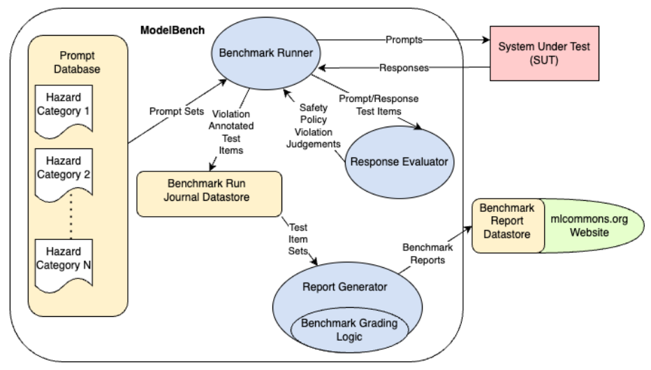 AILuminate: Introducing v1.0 of the AI Risk and Reliability Benchmark from MLCommons. This work was a large collaborative effort involving numerous contributors from the MLCommons organization and the broader AI community, Arxiv, 2025. [Full Text] 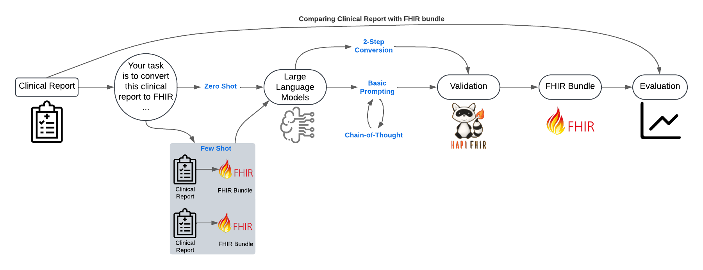 Julien Delaunay, Daniel Girbes, Jordi Cusido Evaluating the Effectiveness of Large Language Models in Converting Clinical Data to FHIR Format. Journal MDPI: Applied Sciences, Basel, 2025. [Full Text] 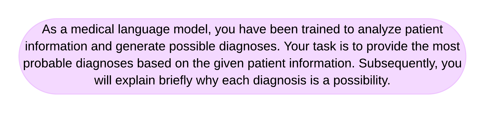 Julien Delaunay, Jordi Cusido Evaluating the Performance of Large Language Models in Predicting Diagnostics for Spanish Clinical Cases in Cardiology. Journal MDPI: Applied Sciences, Basel, 2024. [Full Text] 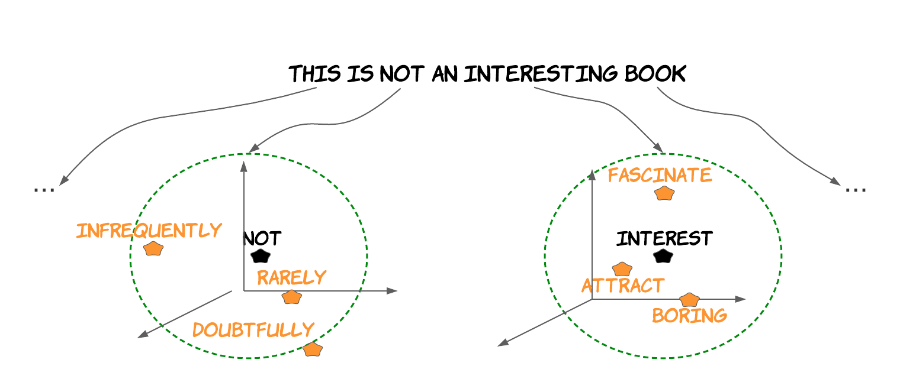 Julien Delaunay, Luis Galárraga, Christine largouët Does It Make Sense to Explain a Black Box With Another Black Box? Revue TAL : Explicabilité des modèles de TAL, 2024, France. [English Version] [French Version] [Presentation] [Code] Julien Delaunay
Explainability for Machine Learning Models: From Data Adaptability to User Perception.
PhD Thesis (INRIA 2023), Rennes.
[Full Text]
[Presentation].
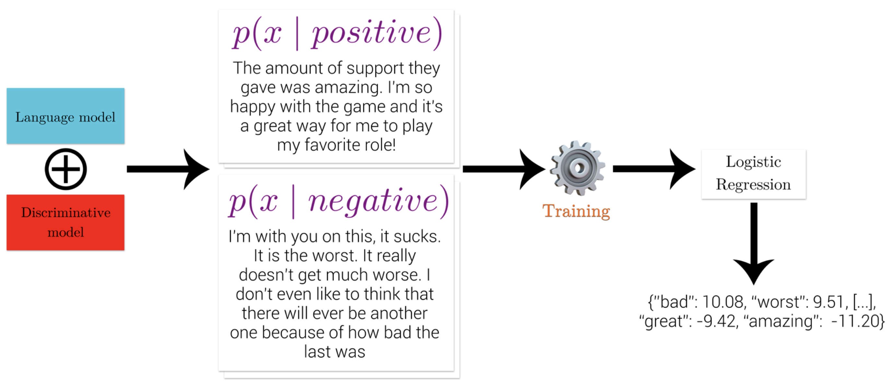
Julien Delaunay,
Antoine Chaffin
“Honey, Tell Me What's Wrong”, Global Explainability of NLP Models through Cooperative Generation
Traitement Automatique du Langage Naturel (TALN 2023), Paris.
[Full Text]
[Presentation]
[Code].
Julien Delaunay
Explainability for Machine Learning Models: From Data Adaptability to User Perception.
PhD Thesis (INRIA 2023), Rennes.
[Full Text]
[Presentation].
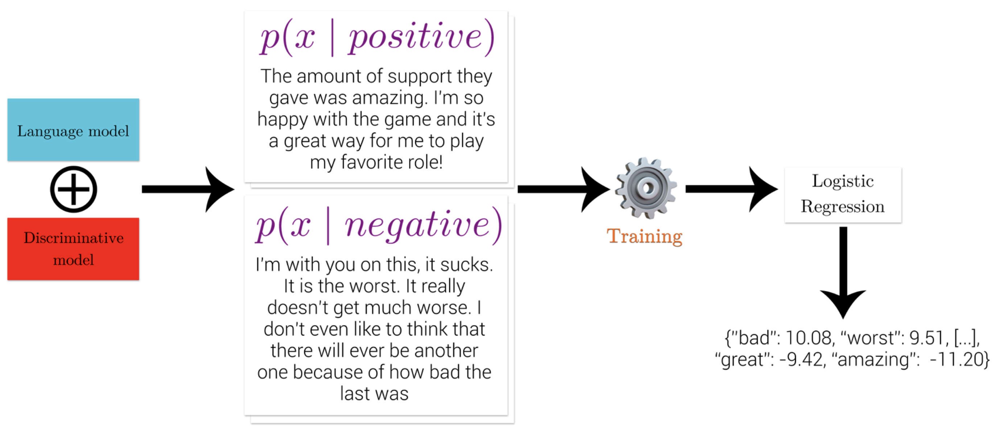
Julien Delaunay,
Antoine Chaffin
“Honey, Tell Me What's Wrong”, Global Explainability of NLP Models through Cooperative Generation
Traitement Automatique du Langage Naturel (TALN 2023), Paris.
[Full Text]
[Presentation]
[Code].
 Julien Delaunay,
Luis Galárraga,
Christine largouët,
Niels van Berkel
Adaptation of AI Explanations to Users' Roles.
Human-Centered Explainable AI (HCXAI 2023) CHI workshop, Hamburg.
[Preprint]
[Video].
Joel Wester,
Julien Delaunay,
Sander de Jong,
Niels van Berkel
On Moral Manifestations in Large Language Models.
Moral Agents for Sustainable Transitions (CHI workshop 2023), Hamburg.
[Preprint].
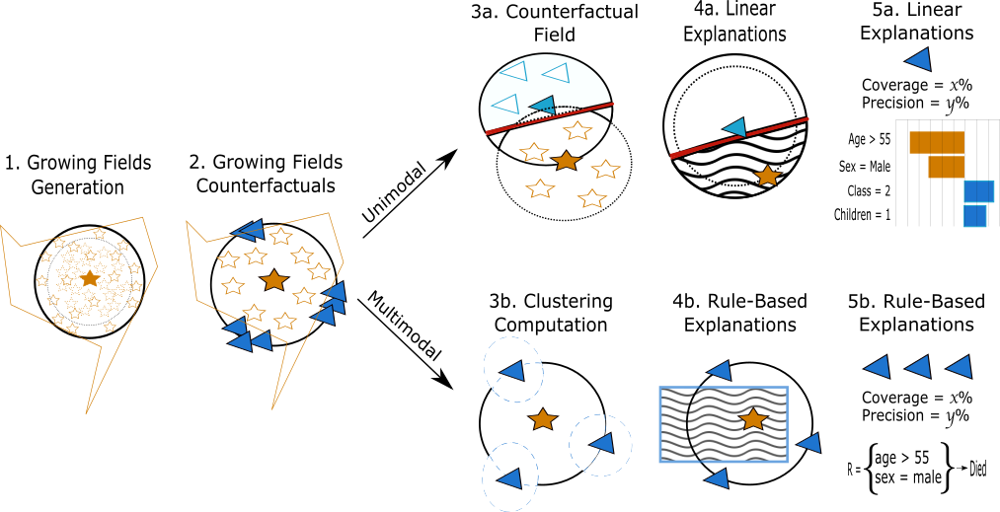
Julien Delaunay,
Luis Galárraga,
Christine largouët
When Should We Use Linear Explanations?
Conference on Information and Knowledge Management (CIKM 2022), Atlanta.
[Full text]
[Video]
[Code].
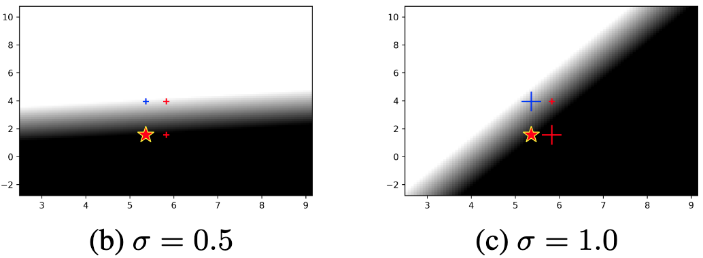
Romaric Gaudel, Luis Galárraga,
Julien Delaunay,
Laurence Rozé, Vaishnavi Bhargava. s-LIME: Reconciling Locality and Fidelity in Linear Explanations.
Intelligent Data Analysis (IDA 2022), Rennes.
[Full text].
Julien Delaunay,
Luis Galárraga,
Christine largouët,
Niels van Berkel
Adaptation of AI Explanations to Users' Roles.
Human-Centered Explainable AI (HCXAI 2023) CHI workshop, Hamburg.
[Preprint]
[Video].
Joel Wester,
Julien Delaunay,
Sander de Jong,
Niels van Berkel
On Moral Manifestations in Large Language Models.
Moral Agents for Sustainable Transitions (CHI workshop 2023), Hamburg.
[Preprint].
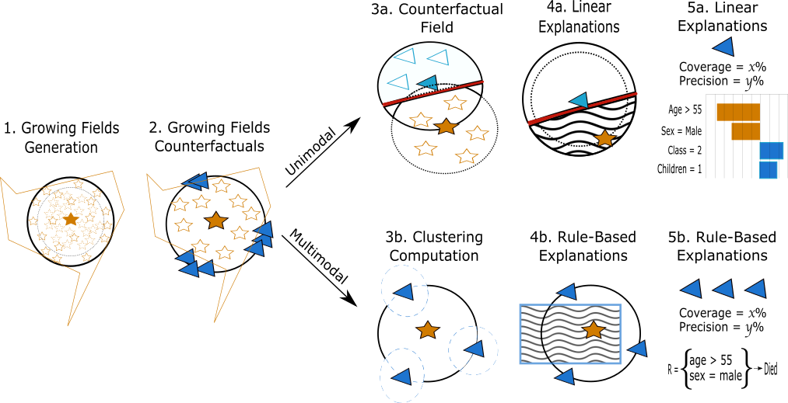
Julien Delaunay,
Luis Galárraga,
Christine largouët
When Should We Use Linear Explanations?
Conference on Information and Knowledge Management (CIKM 2022), Atlanta.
[Full text]
[Video]
[Code].
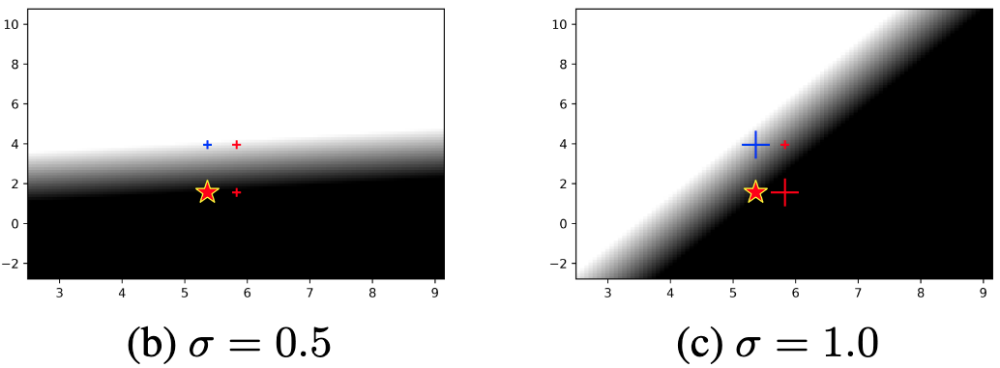
Romaric Gaudel, Luis Galárraga,
Julien Delaunay,
Laurence Rozé, Vaishnavi Bhargava. s-LIME: Reconciling Locality and Fidelity in Linear Explanations.
Intelligent Data Analysis (IDA 2022), Rennes.
[Full text].
 Julien Delaunay, Luis Galárraga,
Christine largouët Improving Anchor-based Explanations.
Conference on Information and Knowledge Management (CIKM 2020), Galway.
[Preprint]
[Video]
[Code].
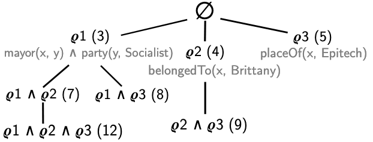
Luis Galárraga, Julien Delaunay,
Jean-Louis Dessalles.
REMI: Mining Intuitive Referring Expressions. International Conference on Extending Database Technology
(EDBT/ICDT 2020), Copenhagen. [Technical report]
[Full text]
[Video]
[Code].
Julien Delaunay, Luis Galárraga,
Christine largouët Improving Anchor-based Explanations.
Conference on Information and Knowledge Management (CIKM 2020), Galway.
[Preprint]
[Video]
[Code].
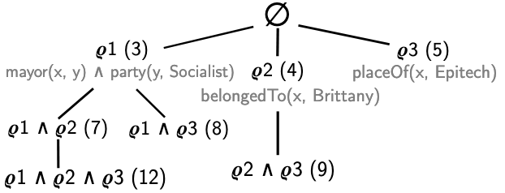
Luis Galárraga, Julien Delaunay,
Jean-Louis Dessalles.
REMI: Mining Intuitive Referring Expressions. International Conference on Extending Database Technology
(EDBT/ICDT 2020), Copenhagen. [Technical report]
[Full text]
[Video]
[Code].
Work experience
2024 -
In my role at Top Doctors, I focus on pioneering the development of chatbots tailored to empower patients in finding the most suitable healthcare specialists based on their specific needs. These chatbots utilize state-of-the-art NLP techniques to comprehend and respond to patients' inquiries in natural language, facilitating a user-friendly and efficient experience. Additionally, I am dedicated to providing intuitive explanations in natural language to healthcare specialists regarding the functionality of complex models. By bridging the gap between technical intricacies and practical healthcare applications, I aim to enhance the accessibility and effectiveness of healthcare services, ultimately benefiting both patients and healthcare providers.
2020 - 2024
My Ph.D. focused on two tasks, firstly I studied the technical aspect of explanation, before moving on the human aspect.
I hence studied when are linear explanations adapted to a model and target instance that leads to a publication in
CIKM 2022. Following this, I visited the Human-Centred Computing group and
conducted user studies to measure how feature-attribution, counterfactual, and rule-based explanation methods affect
the users' trust and understanding.
2022 - 2023
In collaboration with Niels van Berkel,
I conducted user studies to quantify the impact of three well-known explanation techniques
(feature-attribution, rule-based, and counterfactual) on users' trust and understanding.
This visit ended with the submission of a paper at
VIS 2023.
I have been lucky to meet a group of extremely talented and friendly colleagues there.
Together we worked on two additional projects that lead to the publication of workshop papers at
CHI 2023.
2020
I completed my research master's degree with a six months internship at Inria Rennes.
This internship was part of the FABLE project (that leads to my PhD thesis.)
I proposed a better discretization method to improve
Anchors for tabular data and
extended the latent research space used by Anchors to generate textual explanation.
This internship ended with a publication in CIKM 2020.
2018
I completed my bachelor degree with a four months internship in a research laboratory.
This was my first foot in the research, and I never leave it after.
This internship in the domain of semantic web ended with the publication
of an article concerning the mining of referring expressions in
EDBT 2020.
During this internship I coded a programm called REMI, supervised by Luis Galárraga.
Teaching
For three years, I teached 30 hours of directed and practical work of prediction methods of time series.
Throughout this teaching, I introduce prediction methods for time series such as exponential smoothing and auto regressive models.
The end of the year is completed by a
kaggle project I introduced on prediction of house prices.
I teached 15h of directed and practical work introducing the classic machine learning approaches in Python.
I presented the scikit-learn, numpy, and pandas libraries to allow students to conduct a machine learning project.
I teached 20h of directed and practical work of introduction to neural networks.
We introduce to students basic neural networks for tabular and image data on respectively wine
and Cifar10 datasets. The final project was to implement a
neural network to classify cats from dogs.
Evaluation of a report and an oral presentation of a scientific topic to be further investigated and reported.
The purpose is to challenge the student to embrace scientific information and technology as well as to learn how to synthesise
this information and present it in English.
For two years, I teached 20h of directed and practical work of office tools for the statistician such as Excel and Latex for two groups of first year student at ENSAI
(École nationale de la statistique et de l'analyse de l'information). This first teaching experience was a good introduction for the exercise.
Moreover, it was my only classroom teaching of the year due to the pandemic situation.
For two years, I teached 20h of practical work in object programming in Java.
The purpose of this course is to discover the concept of object programming, notion of inheritance and collections such as trees and lists.
Throughout this teaching I learnt to teach distance learning course and interact with students through Microsoft Teams.
I implemented the final project which consisted in creating a kind of tower defense video game.
Education
PhD student in computer science,University of Rennes 1, France, 2020-
Research master's degree in computer science, University of Rennes 1, France, 2019-2020
Master's degree in computer science, University of Sherbrooke, Canada, 2018-2019
University degree MIAGE informatics methods applied to business management, University of Rennes 1, France, 2015-2018
Scientific and european baccalaureate,High School St Martin, Rennes, France, 2012-2015
Technical skills
Programming Languages:- Matplotlib
- Transformers
- spaCy
- Hugging Face
- Scikit-Learn
Languages
 French
FrenchNative speaker
 English
EnglishProfessional level
 Spanish
SpanishBasic skills
ChineseBeginner level
Supervision
2020Mentoring of Jacques Lacourt, a final year trainee at Centrale Marseille.
Organisation member
Member of the team organizing the monthly seminars of the Data Knowledge Management
department at Inria/Irisa Rennes.
Member of the Centre Committee at
Inria Rennes where I represent the C College.
In charge of communication for the association of resident of Sherbrooke University. Agrus
Latest news
March 2025: I am excited to share that our paper, "Evaluating the Effectiveness of Large Language Models in Converting Clinical Data to FHIR Format," has been published in Applied Sciences MDPI. Read the full paper here.February 2025: Delighted to announce the publication of our collaborative work with MLCommons, available on arXiv. This benchmark is a significant step towards ensuring safer AI deployment by assessing the risk and reliability of LLMs across 12 critical hazard categories.
December 2024: Proud to announce that my first research paper conducted entirely at Top Doctors, titled ``Predicting Diagnostics in Cardiology Using Large Language Models,'' has been published in a prestigious journal. This work focuses on leveraging LLMs to enhance diagnostic accuracy in cardiology. 30th May 2024: I have presented ``The Impact of Explanation Techniques and Representations on User Understanding and Trust in Explainable AI'' during the XAI4U event, entirely dedicated to XAI for end-users. April 2024: Excited to share that my latest research paper, ``Does It Make Sense to Explain a Black Box With Another Black Box?'' has been officially published in the Revue TAL : Explicabilité des modèles de TAL. It proposed a comparison of two primary methodologies in identifying counterfactuals. March 2024: Thrilled to announce that since joining Top Doctors, I've been working diligently on implementing my expertise in generative AI, specifically focusing on NLP, to revolutionize healthcare services provided by chatbots. December 2023: I successfully defended my PhD on the 20th of December with a wonderful jury. October 2023: Exciting news, my PhD thesis has been submitted, and our research paper entitled ``'Honey, Tell Me What's Wrong', Global Explainability of NLP Models through Cooperative Generation.'' has been accepted for presentation at the prestigious BlackboxNLP 2023 workshop held during EMNLP. July 2023: I presented our paper "When Should We Use Linear Explanations?" during the french conference on machine learning (CAp) at Strasbourg. April 2023: I presented our work about the adaptation of explanations to user profiles at HCXAI workshop.